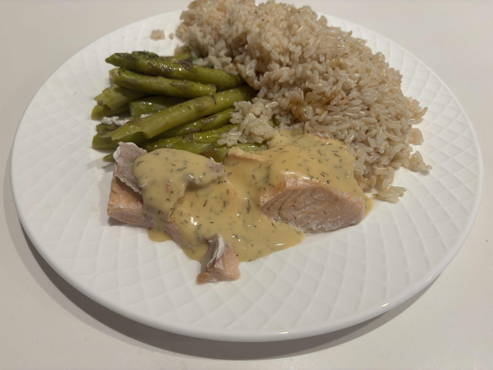

Home
Salmon Meal(rice cooker/steamer)

Ingredients
- 3/4 cup brown rice
- 1 1/8 cup water
- 1 salmon filet
- half an asperagus bunch
- Lemon butter dill sauce
- Salt
- Pepper
Steps
- Pour in rice and water into the rice cooker and push the switch to cook. Cooks for 30-35 min before it switches to warm automatically.
- Rip or cut off hard ends of asperagus.
- Put salmon filet and asperagus into the steamer, rip or cut asperagus as needed to fit. Steam for 25 min.
- Plate salmon, rice, and asperagus. Pour lemon butter dill sauce over the salmon. Season asperagus with salt and pepper.